【ポケポケ】新パック「ロケット団の野望」まとめ｜8月27日(木)登場・ファイヤーexの弱点変更が判明
結論：新テーマ拡張パック「ロケット団の野望」は8月27日(木)登場。今回いちばんの注目点は、ロケット団のファイヤーexの弱点が「水」に変更されていたことです。過去弾のファイヤーexは弱点が雷だったため、同じカードで弱点タイプが変わったのは今回が初めて。紹介映像を画面照合して判明した収録カード17種の性能と、キャンペーン情報まで一次情報でまとめました。
1. 「ロケット団の野望」基本情報
| 項目 | 内容 |
|---|---|
| パック名 | テーマ拡張パック「ロケット団の野望」 |
| 登場日 | 2026年8月27日(木) |
| 収録カード数 | 公式発表は新パック本体15種＋AppStore先行公開3種の計18種（本記事で性能を確認できたのは17種） |
| 目玉カード | ロケット団のファイヤーex（弱点タイプ変更が判明） |
| テーマ | ロケット団（サカキ・アカギ・ムサシ&コジロウ）のポケモンが多数収録 |
「ロケット団の野望」は、ロケット団に所属するポケモンたちを中心にしたテーマ拡張パックです。ミュウツー・フリーザーex・サンダーex・ファイヤーexという伝説級のラインナップに加えて、ラプラスやガラガラ、ペルシアンといった定番ポケモンにも「ロケット団の」の名がつき、専用の効果を持って再登場します。
2. 目玉：ファイヤーexの弱点変更を考察
紹介映像を画面照合して確認できたロケット団のファイヤーexのステータスがこちらです。
| 項目 | 判明内容 |
|---|---|
| HP | 130 |
| タイプ | 炎 |
| ワザ1「ヒートチャージ」 | 炎1／コインを3回投げ、オモテの数ぶんの炎エネルギーをエネルギーゾーンから出し、このポケモンにつける |
| ワザ2「ごくえんのつばさ」 | 炎3+無色1／130ダメージ。このポケモンから炎エネルギーを1個トラッシュ |
| 弱点 | 水 +20 |
| にげる | 2 |
ここで注目したいのが弱点が「水」になっている点です。過去弾「最強の遺伝子」に収録されているファイヤーexは弱点が雷でした。同じ「ファイヤーex」というカード群で弱点タイプが変わったのは、確認できた範囲では今回が初めてのケースです。
この変更が刺さる相手として真っ先に挙がるのがオドリドリです。オドリドリは特性「しんぴのまもり」でポケモンexのワザダメージを受けない代わりに弱点が雷に設定されているため、雷弱点を突かれる心配がありませんでした。しかしファイヤーexの弱点が水に変わったことで、オドリドリ側から見れば「炎エネのファイヤーexに弱点を突かれるリスクはそのままだが、雷タイプの対策カードで弱点を突く択が使えなくなる」という、環境の噛み合わせが変化する可能性があります。単純な強化・弱体化ではなく、相性関係を作り直す調整という見方が近そうです。実際の対戦への影響は8月27日の実装後、対戦データが揃ってから改めて検証します。
3. 判明している収録カード17種の性能一覧
紹介映像を1コマずつ画面照合し、新パック本体14種＋AppStore先行公開3種の計17種の性能を確認できました（公式発表の総数18種のうち残り1種は続報が入り次第追記します）。
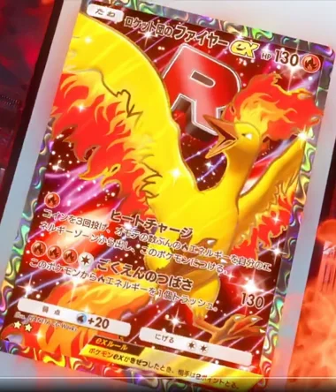
炎・たね
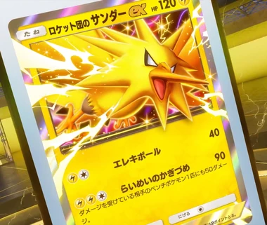
雷・たね
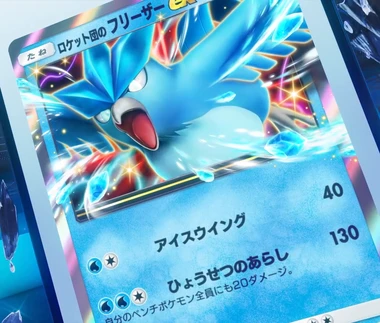
水・たね
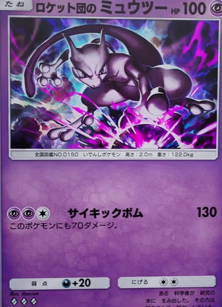
エスパー・たね
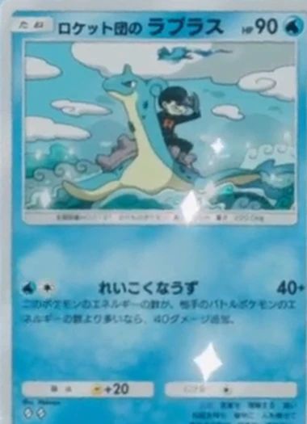
水・たね
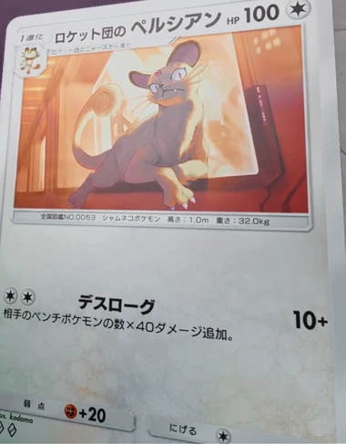
無色・1進化
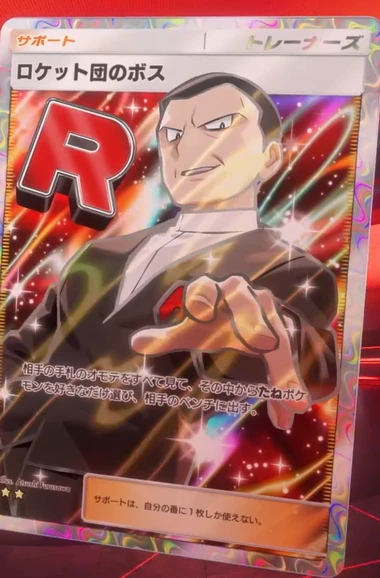
サポート
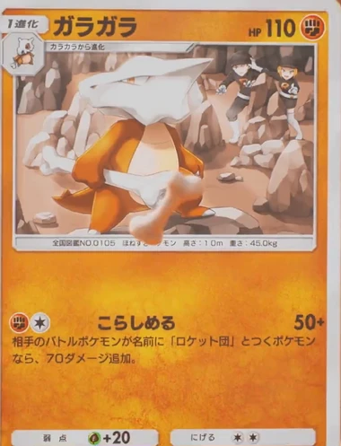
闘・1進化
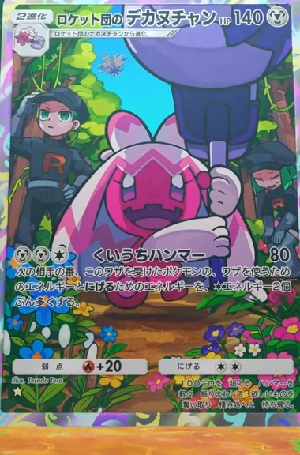
エスパー・2進化
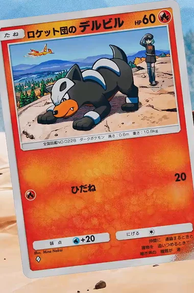
炎・たね
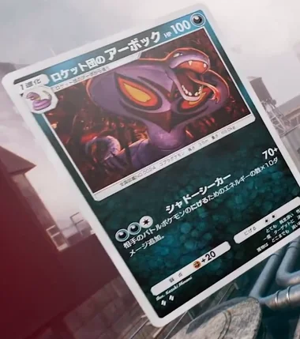
悪・1進化
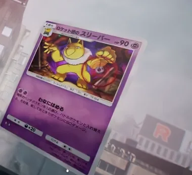
エスパー・1進化
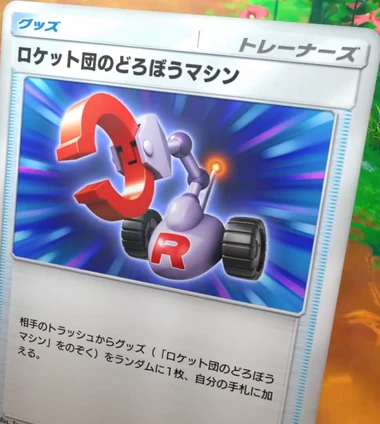
グッズ
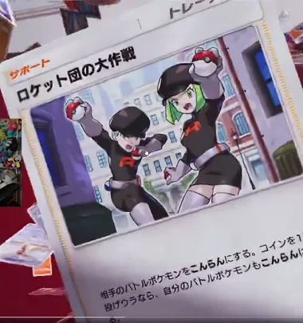
サポート
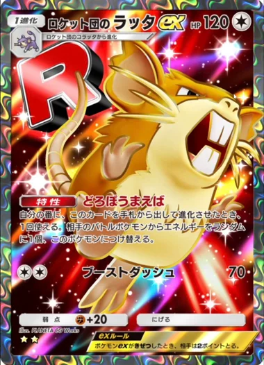
無色・1進化（AppStore先行）
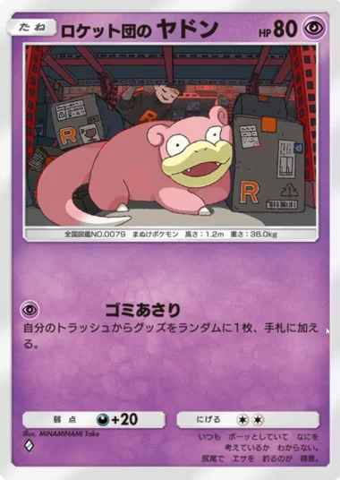
エスパー・たね（AppStore先行）
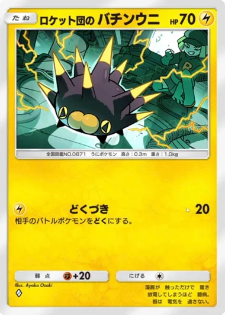
雷・たね（AppStore先行）
▲ 紹介映像を画面照合して確認した17種。カードの向き・ホログラム反射の都合で一部読み取れなかった箇所は本文・表で正直に注記しています。下の表に各カードの性能をまとめました。
| カード | 分類 | HP | 主なワザ・効果 |
|---|---|---|---|
| ロケット団のファイヤーex | 炎・たね | 130 | ヒートチャージ／ごくえんのつばさ130。弱点が水に変更 |
| ロケット団のサンダーex | 雷・たね | 120 | エレキボール40／らいめいのかぎづめ90（ダメージを受けている相手のベンチポケモン1匹にも50ダメージ） |
| ロケット団のフリーザーex | 水・たね | 130 | アイスウイング40／ひょうせつのあらし130＋自分のベンチ全員にも20 |
| ロケット団のミュウツー | エスパー・たね | 100 | サイキックボム130＋自分にも70。弱点悪+20 |
| ロケット団のラプラス | 水・たね | 90 | れいこくなうず40＋自分のエネが相手より多いなら+40 |
| ロケット団のペルシアン | 無色・1進化（ニャースから） | 100 | デスローグ10＋相手ベンチ数×40。弱点格闘+20 |
| ロケット団のボス | サポート | - | 相手の手札のたねポケモンを好きなだけ選び、相手のベンチに出す（1ターン1枚制限） |
| ガラガラ | 闘・1進化（カラカラから） | 110 | こらしめる50＋相手が「ロケット団」名なら+70。唯一「ロケット団の」が付かない収録カード |
| ロケット団のデカヌチャン | エスパー・2進化（ナカヌチャンから） | 140 | くいうちハンマー80＋次の相手の番、相手のワザ・にげるコストを無色2個分増加。弱点悪+20 |
| ロケット団のデルビル | 炎・たね | 60 | ひだね（炎1）20ダメージ。弱点水+20／にげる1 |
| ロケット団のアーボック | 悪・1進化 | 100 | シャドーシーカー70＋相手のにげるエネの数×10追加。弱点格闘+20 |
| ロケット団のスリーパー | エスパー・1進化 | 90 | わなにはめる：相手ベンチと入れ替え、新しく出たポケモンに50。弱点悪+20 |
| ロケット団のどろぼうマシン | グッズ | - | 相手のトラッシュからグッズ（本カードを除く）をランダムに1枚、自分の手札に加える |
| ロケット団の大作戦 | サポート | - | 相手をこんらんに。コイン1回投げウラなら自分もこんらんに |
| ロケット団のラッタex（AppStore先行） | 無色・1進化（コラッタから） | 120 | 特性「どろぼうまえば」（進化させた番に1回、相手のエネをランダムに1個つけ替え）／ブーストダッシュ70。弱点格闘+20 |
| ロケット団のヤドン（AppStore先行） | エスパー・たね | 80 | ゴミあさり：自分のトラッシュからグッズをランダムに1枚、手札に加える。弱点悪+20 |
| ロケット団のバチンウニ（AppStore先行） | 雷・たね | 70 | どくづき20＋相手をどくに。弱点闘+20 |
グッズ・サポートも含めてロケット団の"戦法"が色濃く出たラインナップです。特にロケット団のボスは相手の手札のたねポケモンを強制的にベンチへ出せるため、ロケット団のペルシアン（相手ベンチ数×40ダメージ追加）やロケット団のデカヌチャンとの組み合わせで、相手のベンチ枚数を増やしてから広範囲火力を伸ばす構築が組めそうです。ロケット団のどろぼうマシンとロケット団のヤドンはどちらも「トラッシュから拾う」系の効果を持つため、グッズを使い切っても息切れしにくいのも見どころ。なお唯一「ガラガラ」だけ「ロケット団の」のプレフィックスが付いていない収録カードで、効果テキストの側に「ロケット団」の文字列が入っている変則構造になっています。
4. キャンペーン情報（パック砂時計・渋谷広告）
「ロケット団の野望〜謎解き大作戦〜」
特設サイトで出題される謎を解くと、パック砂時計がもらえるシリアルコードが手に入るキャンペーンが実施されます。詳細は8月27日(木)に公式X（@PokemonTCGP_JP）で公開予定とのことなので、パックが解禁されるタイミングで合わせてチェックしておくのがおすすめです。
渋谷スクランブル交差点の屋外広告
8月25日(火)〜8月31日(月)の7日間、東京・渋谷スクランブル交差点付近の「ZeroBase渋谷」に、「ロケット団の野望」特別デザインのラッピング屋外広告が出現します。近くに行く機会がある人はチェックしてみてください。
よくある質問
Q. 「ロケット団の野望」はいつから引ける？
2026年8月27日(木)に登場するテーマ拡張パックです。新パック本体15種に加え、AppStoreストーリーで3種が先行公開されました。
Q. ロケット団のファイヤーexの弱点が変わったって本当？
本当です。紹介映像で確認できたロケット団のファイヤーexは弱点が「水」になっています。過去弾「最強の遺伝子」のファイヤーexは弱点が雷だったため、同じファイヤーexというカード群で弱点タイプが変わった初めてのケースです。
Q. 収録カードは全部で何種類？
公式発表では新パック本体15種＋AppStore先行公開3種の計18種です。このうち紹介映像で性能を確認できたのは17種（本体14種＋AppStore先行3種）。残り1種は続報が入り次第追記します。
Q. パック砂時計はどうすれば手に入る？
「ロケット団の野望〜謎解き大作戦〜」特設サイトで出題される謎を解くと、パック砂時計がもらえるシリアルコードが手に入ります。詳細は8月27日(木)に公式X（@PokemonTCGP_JP）で公開予定です。